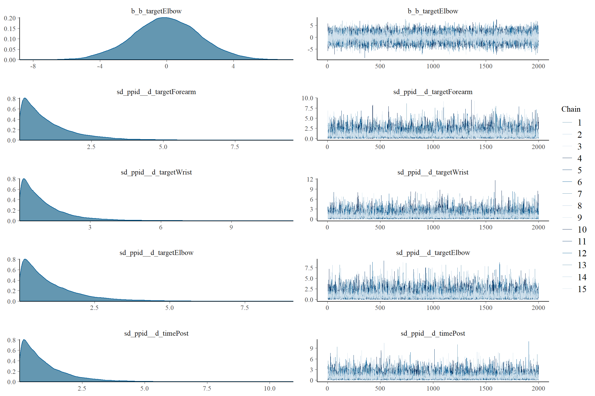

knitr::opts_chunk$set(echo = TRUE,
warning = FALSE,
message = FALSE,
cache = TRUE,
fig.width = 12,
fig.height = 8)
pkgs <- c("dplyr", "readr", "magrittr", "data.table", "here", "brms", "cmdstanr", "bayestestR", "tidybayes", "ggplot2", "flextable", "officer")
for(i in pkgs){
if(!i %in% rownames(installed.packages())){
install.packages(i)
library(i, character.only = TRUE)
}
else(library(i, character.only = TRUE))
}
options("mc.cores" = parallel::detectCores(), "brms.backend" = "cmdstan")
b = 16000/parallel::detectCores()
i = 48000/parallel::detectCores()
ch = parallel::detectCores()
co = parallel::detectCores()Bayesian Models - Landmark
landmark <- fread(here::here("data", "study_two", "landmark.csv"))
landmark_summary <- landmark %>% select(ppid, trial, time,
forearmlength, target,
error, lapse_fix_target,
lapse_fix_error) %>%
dplyr::filter(!ppid == "d2-010") %>%
mutate(error_std = datawizard::standardize(error),
forearmlength_std = datawizard::standardize(forearmlength),
lapse_fix_error_std = datawizard::standardize(lapse_fix_error),
lapse_fix_target = factor(
lapse_fix_target,
levels = c("Forearm", "Wrist", "Elbow")),
time = factor(time,
levels = c("pre", "post"),
labels = c("Pre", "Post")),
target = factor(target,
levels = c("Forearm", "Wrist", "Elbow")))
landmark_fix <- landmark_summary %>%
select(
ppid, trial, time,
forearmlength_std,
lapse_fix_target,
lapse_fix_error_std
) %>%
mutate(
target = lapse_fix_target,
error_std = lapse_fix_error_std,
)
landmark_summary %>%
group_by(time, target) %>%
summarise(
num_lapses = sum(lapse_fix_target != target),
num_trials = n(),
lapse_rate = num_lapses/num_trials
)# A tibble: 6 × 5
# Groups: time [2]
time target num_lapses num_trials lapse_rate
<fct> <fct> <int> <int> <dbl>
1 Pre Forearm 15 150 0.1
2 Pre Wrist 11 150 0.0733
3 Pre Elbow 2 150 0.0133
4 Post Forearm 14 150 0.0933
5 Post Wrist 13 150 0.0867
6 Post Elbow 0 150 0 Models
In order to have an interaction parameter (and hypothesis test) for all three targets, brms’s nonlinear construction was used. ## Normal ### Prior
landmark_time_target_priors <- brm(
bf(error_std ~ 0 + a + b * time + d,
a ~ 0 + target,
b ~ 0 + target,
d ~ 0 + (0 + target + time + target : time | ppid),
nl = TRUE),
prior = c(prior("normal(0, 2)", nlpar = "a"),
prior("normal(.2, 2)", nlpar = "b"),
#prior("normal(0, .5)", nlpar = "c"),
prior("exponential(1)", class = "sd", nlpar = "d"),
prior("exponential(1)", class = "sigma"),
set_prior(prior = "lkj(1)", class = "cor", group = "ppid")),
data = landmark_summary,
sample_prior = "only",
seed = 1337,
silent = TRUE, refresh = 0,
save_pars = save_pars(all = TRUE),
warmup = b,
iter = i,
chains = ch,
cores = co,
control = list(adapt_delta = .975, max_treedepth = 15))Running MCMC with 16 parallel chains...
Chain 7 finished in 2.9 seconds.
Chain 2 finished in 3.5 seconds.
Chain 4 finished in 3.4 seconds.
Chain 1 finished in 3.6 seconds.
Chain 8 finished in 3.6 seconds.
Chain 3 finished in 3.8 seconds.
Chain 5 finished in 3.8 seconds.
Chain 6 finished in 3.7 seconds.
Chain 9 finished in 3.6 seconds.
Chain 10 finished in 3.7 seconds.
Chain 11 finished in 3.9 seconds.
Chain 12 finished in 3.8 seconds.
Chain 14 finished in 3.7 seconds.
Chain 16 finished in 3.6 seconds.
Chain 13 finished in 3.8 seconds.
Chain 15 finished in 3.7 seconds.
All 16 chains finished successfully.
Mean chain execution time: 3.6 seconds.
Total execution time: 4.2 seconds.summary(landmark_time_target_priors) Family: gaussian
Links: mu = identity; sigma = identity
Formula: error_std ~ 0 + a + b * time + d
a ~ 0 + target
b ~ 0 + target
d ~ 0 + (0 + target + time + target:time | ppid)
Data: landmark_summary (Number of observations: 900)
Draws: 16 chains, each with iter = 3000; warmup = 1000; thin = 1;
total post-warmup draws = 32000
Group-Level Effects:
~ppid (Number of levels: 25)
Estimate Est.Error l-95% CI
sd(d_targetForearm) 1.00 0.98 0.03
sd(d_targetWrist) 1.01 1.02 0.02
sd(d_targetElbow) 1.00 0.99 0.02
sd(d_timePost) 0.99 0.98 0.03
sd(d_targetWrist:timePost) 1.00 1.00 0.03
sd(d_targetElbow:timePost) 1.00 1.00 0.02
cor(d_targetForearm,d_targetWrist) -0.00 0.38 -0.71
cor(d_targetForearm,d_targetElbow) 0.00 0.38 -0.71
cor(d_targetWrist,d_targetElbow) -0.00 0.38 -0.71
cor(d_targetForearm,d_timePost) -0.00 0.38 -0.71
cor(d_targetWrist,d_timePost) -0.00 0.38 -0.70
cor(d_targetElbow,d_timePost) 0.00 0.38 -0.70
cor(d_targetForearm,d_targetWrist:timePost) -0.00 0.38 -0.71
cor(d_targetWrist,d_targetWrist:timePost) 0.00 0.38 -0.71
cor(d_targetElbow,d_targetWrist:timePost) 0.00 0.38 -0.71
cor(d_timePost,d_targetWrist:timePost) -0.00 0.38 -0.71
cor(d_targetForearm,d_targetElbow:timePost) 0.00 0.38 -0.71
cor(d_targetWrist,d_targetElbow:timePost) 0.00 0.38 -0.70
cor(d_targetElbow,d_targetElbow:timePost) 0.00 0.38 -0.70
cor(d_timePost,d_targetElbow:timePost) -0.00 0.38 -0.72
cor(d_targetWrist:timePost,d_targetElbow:timePost) -0.00 0.38 -0.71
u-95% CI Rhat Bulk_ESS
sd(d_targetForearm) 3.62 1.00 39976
sd(d_targetWrist) 3.79 1.00 40258
sd(d_targetElbow) 3.65 1.00 40767
sd(d_timePost) 3.63 1.00 40856
sd(d_targetWrist:timePost) 3.69 1.00 39465
sd(d_targetElbow:timePost) 3.67 1.00 40457
cor(d_targetForearm,d_targetWrist) 0.71 1.00 73155
cor(d_targetForearm,d_targetElbow) 0.71 1.00 69661
cor(d_targetWrist,d_targetElbow) 0.71 1.00 41857
cor(d_targetForearm,d_timePost) 0.71 1.00 74901
cor(d_targetWrist,d_timePost) 0.71 1.00 41693
cor(d_targetElbow,d_timePost) 0.71 1.00 29467
cor(d_targetForearm,d_targetWrist:timePost) 0.71 1.00 76161
cor(d_targetWrist,d_targetWrist:timePost) 0.72 1.00 42812
cor(d_targetElbow,d_targetWrist:timePost) 0.71 1.00 29801
cor(d_timePost,d_targetWrist:timePost) 0.71 1.00 22712
cor(d_targetForearm,d_targetElbow:timePost) 0.71 1.00 70936
cor(d_targetWrist,d_targetElbow:timePost) 0.70 1.00 40167
cor(d_targetElbow,d_targetElbow:timePost) 0.71 1.00 29605
cor(d_timePost,d_targetElbow:timePost) 0.70 1.00 23334
cor(d_targetWrist:timePost,d_targetElbow:timePost) 0.71 1.00 18341
Tail_ESS
sd(d_targetForearm) 17191
sd(d_targetWrist) 16583
sd(d_targetElbow) 17671
sd(d_timePost) 19020
sd(d_targetWrist:timePost) 16684
sd(d_targetElbow:timePost) 17269
cor(d_targetForearm,d_targetWrist) 21108
cor(d_targetForearm,d_targetElbow) 21410
cor(d_targetWrist,d_targetElbow) 22879
cor(d_targetForearm,d_timePost) 21003
cor(d_targetWrist,d_timePost) 20953
cor(d_targetElbow,d_timePost) 23697
cor(d_targetForearm,d_targetWrist:timePost) 20272
cor(d_targetWrist,d_targetWrist:timePost) 21921
cor(d_targetElbow,d_targetWrist:timePost) 23582
cor(d_timePost,d_targetWrist:timePost) 24151
cor(d_targetForearm,d_targetElbow:timePost) 21469
cor(d_targetWrist,d_targetElbow:timePost) 21037
cor(d_targetElbow,d_targetElbow:timePost) 23656
cor(d_timePost,d_targetElbow:timePost) 23512
cor(d_targetWrist:timePost,d_targetElbow:timePost) 24101
Population-Level Effects:
Estimate Est.Error l-95% CI u-95% CI Rhat Bulk_ESS Tail_ESS
a_targetForearm -0.01 2.01 -3.97 3.92 1.00 72282 22733
a_targetWrist -0.01 1.99 -3.91 3.86 1.00 76251 20648
a_targetElbow 0.00 2.00 -3.92 3.94 1.00 75551 22387
b_targetForearm 0.21 2.00 -3.71 4.13 1.00 70673 22963
b_targetWrist 0.19 1.97 -3.63 4.04 1.00 71639 23622
b_targetElbow 0.18 1.99 -3.78 4.09 1.00 73746 22166
Family Specific Parameters:
Estimate Est.Error l-95% CI u-95% CI Rhat Bulk_ESS Tail_ESS
sigma 1.00 1.00 0.03 3.67 1.00 40667 17754
Draws were sampled using sample(hmc). For each parameter, Bulk_ESS
and Tail_ESS are effective sample size measures, and Rhat is the potential
scale reduction factor on split chains (at convergence, Rhat = 1).plot(landmark_time_target_priors)Posterior
landmark_time_target <- update(
landmark_time_target_priors,
sample_prior = "no",
refresh = 0,
seed = 1337,
file = here::here("scripts", "for_osf", "tooluse_in_real", "models", "landmark_error_time_target.rds"),
file_refit = "on_change",
silent = TRUE
)
summary(landmark_time_target) Family: gaussian
Links: mu = identity; sigma = identity
Formula: error_std ~ 0 + a + b * time + d
a ~ 0 + target
b ~ 0 + target
d ~ 0 + (0 + target + time + target:time | ppid)
Data: landmark_summary (Number of observations: 900)
Draws: 16 chains, each with iter = 3000; warmup = 1000; thin = 1;
total post-warmup draws = 32000
Group-Level Effects:
~ppid (Number of levels: 25)
Estimate Est.Error l-95% CI
sd(d_targetForearm) 0.52 0.09 0.37
sd(d_targetWrist) 0.73 0.12 0.53
sd(d_targetElbow) 0.71 0.12 0.51
sd(d_timePost) 0.43 0.10 0.25
sd(d_targetWrist:timePost) 0.15 0.12 0.01
sd(d_targetElbow:timePost) 0.45 0.17 0.09
cor(d_targetForearm,d_targetWrist) 0.78 0.11 0.52
cor(d_targetForearm,d_targetElbow) 0.32 0.19 -0.07
cor(d_targetWrist,d_targetElbow) 0.09 0.19 -0.29
cor(d_targetForearm,d_timePost) -0.24 0.21 -0.61
cor(d_targetWrist,d_timePost) -0.02 0.22 -0.44
cor(d_targetElbow,d_timePost) -0.07 0.23 -0.49
cor(d_targetForearm,d_targetWrist:timePost) -0.01 0.35 -0.68
cor(d_targetWrist,d_targetWrist:timePost) -0.07 0.35 -0.71
cor(d_targetElbow,d_targetWrist:timePost) 0.05 0.36 -0.65
cor(d_timePost,d_targetWrist:timePost) -0.04 0.37 -0.71
cor(d_targetForearm,d_targetElbow:timePost) 0.18 0.26 -0.36
cor(d_targetWrist,d_targetElbow:timePost) 0.10 0.25 -0.41
cor(d_targetElbow,d_targetElbow:timePost) -0.39 0.25 -0.78
cor(d_timePost,d_targetElbow:timePost) 0.07 0.29 -0.48
cor(d_targetWrist:timePost,d_targetElbow:timePost) -0.04 0.37 -0.72
u-95% CI Rhat Bulk_ESS
sd(d_targetForearm) 0.71 1.00 12429
sd(d_targetWrist) 0.98 1.00 12627
sd(d_targetElbow) 0.99 1.00 12384
sd(d_timePost) 0.65 1.00 12469
sd(d_targetWrist:timePost) 0.44 1.00 9911
sd(d_targetElbow:timePost) 0.80 1.00 5869
cor(d_targetForearm,d_targetWrist) 0.93 1.00 12432
cor(d_targetForearm,d_targetElbow) 0.65 1.00 10435
cor(d_targetWrist,d_targetElbow) 0.45 1.00 13911
cor(d_targetForearm,d_timePost) 0.22 1.00 13700
cor(d_targetWrist,d_timePost) 0.41 1.00 19059
cor(d_targetElbow,d_timePost) 0.38 1.00 18881
cor(d_targetForearm,d_targetWrist:timePost) 0.67 1.00 40335
cor(d_targetWrist,d_targetWrist:timePost) 0.63 1.00 39324
cor(d_targetElbow,d_targetWrist:timePost) 0.71 1.00 33956
cor(d_timePost,d_targetWrist:timePost) 0.68 1.00 25459
cor(d_targetForearm,d_targetElbow:timePost) 0.63 1.00 19906
cor(d_targetWrist,d_targetElbow:timePost) 0.58 1.00 27271
cor(d_targetElbow,d_targetElbow:timePost) 0.18 1.00 19331
cor(d_timePost,d_targetElbow:timePost) 0.65 1.00 19635
cor(d_targetWrist:timePost,d_targetElbow:timePost) 0.66 1.00 13452
Tail_ESS
sd(d_targetForearm) 19408
sd(d_targetWrist) 18378
sd(d_targetElbow) 19683
sd(d_timePost) 15583
sd(d_targetWrist:timePost) 15145
sd(d_targetElbow:timePost) 4120
cor(d_targetForearm,d_targetWrist) 20134
cor(d_targetForearm,d_targetElbow) 17390
cor(d_targetWrist,d_targetElbow) 19281
cor(d_targetForearm,d_timePost) 20238
cor(d_targetWrist,d_timePost) 22836
cor(d_targetElbow,d_timePost) 23210
cor(d_targetForearm,d_targetWrist:timePost) 24696
cor(d_targetWrist,d_targetWrist:timePost) 24184
cor(d_targetElbow,d_targetWrist:timePost) 25304
cor(d_timePost,d_targetWrist:timePost) 25696
cor(d_targetForearm,d_targetElbow:timePost) 19640
cor(d_targetWrist,d_targetElbow:timePost) 23111
cor(d_targetElbow,d_targetElbow:timePost) 16534
cor(d_timePost,d_targetElbow:timePost) 21217
cor(d_targetWrist:timePost,d_targetElbow:timePost) 22590
Population-Level Effects:
Estimate Est.Error l-95% CI u-95% CI Rhat Bulk_ESS Tail_ESS
a_targetForearm 0.26 0.12 0.02 0.50 1.00 7522 13940
a_targetWrist 0.27 0.16 -0.05 0.57 1.00 8109 13896
a_targetElbow -0.18 0.16 -0.49 0.12 1.00 10998 16053
b_targetForearm -0.22 0.12 -0.46 0.02 1.00 15315 20216
b_targetWrist -0.29 0.13 -0.54 -0.05 1.00 16255 21270
b_targetElbow -0.18 0.16 -0.49 0.13 1.00 14480 19886
Family Specific Parameters:
Estimate Est.Error l-95% CI u-95% CI Rhat Bulk_ESS Tail_ESS
sigma 0.73 0.02 0.69 0.77 1.00 31665 22401
Draws were sampled using sample(hmc). For each parameter, Bulk_ESS
and Tail_ESS are effective sample size measures, and Rhat is the potential
scale reduction factor on split chains (at convergence, Rhat = 1).#plot(landmark_time_target)
pp_check(
landmark_time_target,
type = "dens_overlay_grouped",
ndraws = 50,
group = "target") +
theme_tidybayes() +
theme(
axis.text.y = element_blank()
) +
labs(
title = "Landmark Task Errors",
subtitle = "Posterior Draws vs. Empirical Distribution",
x = "Error (standardized)"
)landmark_describe <- bayestestR::describe_posterior(
landmark_time_target,
centrality = "map",
ci_method="hdi"
) %>% as.data.table()
landmark_describe Parameter MAP CI CI_low CI_high pd ROPE_CI
1: b_a_targetForearm 0.2583284 0.95 0.0242502 0.4959120 0.9842812 0.95
2: b_a_targetWrist 0.2763623 0.95 -0.0410979 0.5775140 0.9547813 0.95
3: b_a_targetElbow -0.1848944 0.95 -0.4964330 0.1174240 0.8855625 0.95
4: b_b_targetForearm -0.2250935 0.95 -0.4610210 0.0165533 0.9641875 0.95
5: b_b_targetWrist -0.2952957 0.95 -0.5430130 -0.0500015 0.9888125 0.95
6: b_b_targetElbow -0.1866934 0.95 -0.4930460 0.1244450 0.8815625 0.95
ROPE_low ROPE_high ROPE_Percentage Rhat ESS
1: -0.1 0.1 0.06911184 1.001212 7456.238
2: -0.1 0.1 0.12302632 1.001257 8005.367
3: -0.1 0.1 0.26661184 1.000625 10917.962
4: -0.1 0.1 0.14414474 1.000406 15179.086
5: -0.1 0.1 0.03634868 1.000485 16142.800
6: -0.1 0.1 0.27375000 1.000541 14366.252landmark_bfs <- landmark_time_target %>%
bayesfactor_pointnull(
direction = ">",
prior = landmark_time_target_priors
) %>%
as.data.table()
(landmark_error_table <- merge(
landmark_bfs[Parameter %in% c(
"b_b_targetElbow",
"b_b_targetWrist",
"b_b_targetForearm"),
.(Parameter = fcase(
Parameter == "b_b_targetElbow", "Elbow",
Parameter == "b_b_targetWrist", "Wrist",
Parameter == "b_b_targetForearm", "Forearm"),
BF = exp(log_BF))],
landmark_describe[
Parameter %in% c(
"b_b_targetElbow",
"b_b_targetWrist",
"b_b_targetForearm"
)][,
Parameter := fcase(
Parameter == "b_b_targetElbow", "Elbow",
Parameter == "b_b_targetWrist", "Wrist",
Parameter == "b_b_targetForearm", "Forearm"
)
],
by = "Parameter"
)
) Parameter BF MAP CI CI_low CI_high pd ROPE_CI
1: Elbow 0.03455301 -0.1866934 0.95 -0.493046 0.1244450 0.8815625 0.95
2: Forearm 0.02075112 -0.2250935 0.95 -0.461021 0.0165533 0.9641875 0.95
3: Wrist 0.01923806 -0.2952957 0.95 -0.543013 -0.0500015 0.9888125 0.95
ROPE_low ROPE_high ROPE_Percentage Rhat ESS
1: -0.1 0.1 0.27375000 1.000541 14366.25
2: -0.1 0.1 0.14414474 1.000406 15179.09
3: -0.1 0.1 0.03634868 1.000485 16142.80write_csv(landmark_error_table, file = here::here("scripts", "for_osf", "tooluse_in_real", "tables", "landmark_table.csv"))Lapse Fix
Prior
landmark_lapsefix_error_time_target_priors <- brm(
bf(error_std ~ 0 + a + b * time + d,
a ~ 0 + target,
b ~ 0 + target,
d ~ 0 + (0 + target + time + target : time | ppid),
nl = TRUE),
prior = c(prior("normal(0, 2)", nlpar = "a"),
prior("normal(0, 2)", nlpar = "b"),
prior("exponential(1)", class = "sd", nlpar = "d"),
prior("exponential(1)", class = "sigma")),
data = landmark_fix,
sample_prior = "only",
seed = 1337,
silent = TRUE, refresh = 0,
save_pars = save_pars(all = TRUE),
warmup = b,
iter = i,
chains = ch,
cores = co,
control = list(adapt_delta = .975, max_treedepth = 15))Running MCMC with 16 parallel chains...
Chain 1 finished in 3.6 seconds.
Chain 2 finished in 3.6 seconds.
Chain 3 finished in 3.8 seconds.
Chain 8 finished in 3.8 seconds.
Chain 12 finished in 3.7 seconds.
Chain 13 finished in 3.7 seconds.
Chain 4 finished in 3.8 seconds.
Chain 10 finished in 3.8 seconds.
Chain 5 finished in 3.9 seconds.
Chain 6 finished in 4.0 seconds.
Chain 7 finished in 4.0 seconds.
Chain 9 finished in 3.9 seconds.
Chain 11 finished in 3.9 seconds.
Chain 15 finished in 3.8 seconds.
Chain 16 finished in 3.8 seconds.
The remaining chains had a mean execution time of 4.1 seconds.summary(landmark_lapsefix_error_time_target_priors) Family: gaussian
Links: mu = identity; sigma = identity
Formula: error_std ~ 0 + a + b * time + d
a ~ 0 + target
b ~ 0 + target
d ~ 0 + (0 + target + time + target:time | ppid)
Data: landmark_fix (Number of observations: 900)
Draws: 15 chains, each with iter = 3000; warmup = 1000; thin = 1;
total post-warmup draws = 30000
Group-Level Effects:
~ppid (Number of levels: 25)
Estimate Est.Error l-95% CI
sd(d_targetForearm) 1.00 0.99 0.03
sd(d_targetWrist) 1.00 1.00 0.02
sd(d_targetElbow) 1.00 0.99 0.02
sd(d_timePost) 0.99 0.98 0.03
sd(d_targetWrist:timePost) 1.00 1.01 0.03
sd(d_targetElbow:timePost) 1.00 0.99 0.02
cor(d_targetForearm,d_targetWrist) 0.00 0.38 -0.71
cor(d_targetForearm,d_targetElbow) 0.00 0.38 -0.71
cor(d_targetWrist,d_targetElbow) -0.00 0.38 -0.70
cor(d_targetForearm,d_timePost) -0.00 0.38 -0.70
cor(d_targetWrist,d_timePost) 0.00 0.38 -0.70
cor(d_targetElbow,d_timePost) 0.00 0.38 -0.70
cor(d_targetForearm,d_targetWrist:timePost) -0.00 0.38 -0.71
cor(d_targetWrist,d_targetWrist:timePost) 0.00 0.38 -0.71
cor(d_targetElbow,d_targetWrist:timePost) 0.00 0.38 -0.70
cor(d_timePost,d_targetWrist:timePost) -0.00 0.38 -0.71
cor(d_targetForearm,d_targetElbow:timePost) 0.00 0.38 -0.70
cor(d_targetWrist,d_targetElbow:timePost) 0.00 0.38 -0.70
cor(d_targetElbow,d_targetElbow:timePost) -0.00 0.38 -0.71
cor(d_timePost,d_targetElbow:timePost) -0.00 0.38 -0.71
cor(d_targetWrist:timePost,d_targetElbow:timePost) -0.00 0.38 -0.71
u-95% CI Rhat Bulk_ESS
sd(d_targetForearm) 3.61 1.00 37121
sd(d_targetWrist) 3.72 1.00 38497
sd(d_targetElbow) 3.65 1.00 39043
sd(d_timePost) 3.63 1.00 39378
sd(d_targetWrist:timePost) 3.69 1.00 38014
sd(d_targetElbow:timePost) 3.66 1.00 37374
cor(d_targetForearm,d_targetWrist) 0.72 1.00 76771
cor(d_targetForearm,d_targetElbow) 0.71 1.00 72352
cor(d_targetWrist,d_targetElbow) 0.71 1.00 41219
cor(d_targetForearm,d_timePost) 0.70 1.00 74327
cor(d_targetWrist,d_timePost) 0.70 1.00 39953
cor(d_targetElbow,d_timePost) 0.71 1.00 28124
cor(d_targetForearm,d_targetWrist:timePost) 0.71 1.00 76664
cor(d_targetWrist,d_targetWrist:timePost) 0.72 1.00 42305
cor(d_targetElbow,d_targetWrist:timePost) 0.71 1.00 27219
cor(d_timePost,d_targetWrist:timePost) 0.70 1.00 21792
cor(d_targetForearm,d_targetElbow:timePost) 0.71 1.00 71550
cor(d_targetWrist,d_targetElbow:timePost) 0.71 1.00 39620
cor(d_targetElbow,d_targetElbow:timePost) 0.71 1.00 27305
cor(d_timePost,d_targetElbow:timePost) 0.71 1.00 21370
cor(d_targetWrist:timePost,d_targetElbow:timePost) 0.71 1.00 16996
Tail_ESS
sd(d_targetForearm) 16073
sd(d_targetWrist) 15907
sd(d_targetElbow) 17571
sd(d_timePost) 17732
sd(d_targetWrist:timePost) 16068
sd(d_targetElbow:timePost) 16677
cor(d_targetForearm,d_targetWrist) 19576
cor(d_targetForearm,d_targetElbow) 19115
cor(d_targetWrist,d_targetElbow) 20632
cor(d_targetForearm,d_timePost) 19610
cor(d_targetWrist,d_timePost) 20186
cor(d_targetElbow,d_timePost) 21915
cor(d_targetForearm,d_targetWrist:timePost) 19473
cor(d_targetWrist,d_targetWrist:timePost) 20661
cor(d_targetElbow,d_targetWrist:timePost) 21774
cor(d_timePost,d_targetWrist:timePost) 22868
cor(d_targetForearm,d_targetElbow:timePost) 20855
cor(d_targetWrist,d_targetElbow:timePost) 19613
cor(d_targetElbow,d_targetElbow:timePost) 21757
cor(d_timePost,d_targetElbow:timePost) 22325
cor(d_targetWrist:timePost,d_targetElbow:timePost) 22006
Population-Level Effects:
Estimate Est.Error l-95% CI u-95% CI Rhat Bulk_ESS Tail_ESS
a_targetForearm -0.01 2.00 -3.95 3.91 1.00 74994 20343
a_targetWrist -0.00 2.00 -3.89 3.88 1.00 77407 20332
a_targetElbow 0.01 1.99 -3.89 3.89 1.00 77397 21673
b_targetForearm 0.01 1.99 -3.89 3.90 1.00 70073 21713
b_targetWrist 0.01 1.97 -3.82 3.86 1.00 75261 21635
b_targetElbow -0.02 1.99 -3.97 3.93 1.00 76208 19966
Family Specific Parameters:
Estimate Est.Error l-95% CI u-95% CI Rhat Bulk_ESS Tail_ESS
sigma 1.00 1.01 0.02 3.73 1.00 37267 16605
Draws were sampled using sample(hmc). For each parameter, Bulk_ESS
and Tail_ESS are effective sample size measures, and Rhat is the potential
scale reduction factor on split chains (at convergence, Rhat = 1).plot(landmark_lapsefix_error_time_target_priors)
Posterior
landmark_lapsefix_error_time_target <- update(
landmark_lapsefix_error_time_target_priors,
sample_prior = "no",
refresh = 0,
seed = 1337,
file = here::here("scripts", "for_osf", "tooluse_in_real", "models", "landmark_lapsefix_error_time_target.rds"),
file_refit = "on_change",
silent = TRUE
)
summary(landmark_lapsefix_error_time_target) Family: gaussian
Links: mu = identity; sigma = identity
Formula: error_std ~ 0 + a + b * time + d
a ~ 0 + target
b ~ 0 + target
d ~ 0 + (0 + target + time + target:time | ppid)
Data: landmark_fix (Number of observations: 900)
Draws: 16 chains, each with iter = 3000; warmup = 1000; thin = 1;
total post-warmup draws = 32000
Group-Level Effects:
~ppid (Number of levels: 25)
Estimate Est.Error l-95% CI
sd(d_targetForearm) 0.46 0.08 0.32
sd(d_targetWrist) 0.79 0.12 0.58
sd(d_targetElbow) 0.75 0.12 0.55
sd(d_timePost) 0.40 0.10 0.22
sd(d_targetWrist:timePost) 0.19 0.13 0.01
sd(d_targetElbow:timePost) 0.43 0.16 0.09
cor(d_targetForearm,d_targetWrist) 0.75 0.12 0.47
cor(d_targetForearm,d_targetElbow) 0.35 0.19 -0.05
cor(d_targetWrist,d_targetElbow) 0.03 0.19 -0.33
cor(d_targetForearm,d_timePost) -0.08 0.23 -0.51
cor(d_targetWrist,d_timePost) -0.09 0.22 -0.50
cor(d_targetElbow,d_timePost) -0.10 0.23 -0.53
cor(d_targetForearm,d_targetWrist:timePost) -0.04 0.34 -0.69
cor(d_targetWrist,d_targetWrist:timePost) -0.18 0.34 -0.76
cor(d_targetElbow,d_targetWrist:timePost) 0.08 0.34 -0.60
cor(d_timePost,d_targetWrist:timePost) 0.03 0.36 -0.65
cor(d_targetForearm,d_targetElbow:timePost) -0.11 0.27 -0.62
cor(d_targetWrist,d_targetElbow:timePost) -0.10 0.25 -0.58
cor(d_targetElbow,d_targetElbow:timePost) -0.43 0.24 -0.80
cor(d_timePost,d_targetElbow:timePost) 0.12 0.30 -0.45
cor(d_targetWrist:timePost,d_targetElbow:timePost) -0.05 0.36 -0.72
u-95% CI Rhat Bulk_ESS
sd(d_targetForearm) 0.65 1.00 16136
sd(d_targetWrist) 1.06 1.00 14335
sd(d_targetElbow) 1.03 1.00 14944
sd(d_timePost) 0.62 1.00 12133
sd(d_targetWrist:timePost) 0.50 1.00 9396
sd(d_targetElbow:timePost) 0.76 1.00 7554
cor(d_targetForearm,d_targetWrist) 0.93 1.00 12834
cor(d_targetForearm,d_targetElbow) 0.67 1.00 12403
cor(d_targetWrist,d_targetElbow) 0.40 1.00 17334
cor(d_targetForearm,d_timePost) 0.40 1.00 13965
cor(d_targetWrist,d_timePost) 0.36 1.00 22404
cor(d_targetElbow,d_timePost) 0.36 1.00 20456
cor(d_targetForearm,d_targetWrist:timePost) 0.62 1.00 38672
cor(d_targetWrist,d_targetWrist:timePost) 0.55 1.00 33917
cor(d_targetElbow,d_targetWrist:timePost) 0.70 1.00 30993
cor(d_timePost,d_targetWrist:timePost) 0.70 1.00 24144
cor(d_targetForearm,d_targetElbow:timePost) 0.40 1.00 19191
cor(d_targetWrist,d_targetElbow:timePost) 0.39 1.00 32027
cor(d_targetElbow,d_targetElbow:timePost) 0.12 1.00 25438
cor(d_timePost,d_targetElbow:timePost) 0.69 1.00 16463
cor(d_targetWrist:timePost,d_targetElbow:timePost) 0.65 1.00 12298
Tail_ESS
sd(d_targetForearm) 20702
sd(d_targetWrist) 19278
sd(d_targetElbow) 21216
sd(d_timePost) 14910
sd(d_targetWrist:timePost) 17845
sd(d_targetElbow:timePost) 6554
cor(d_targetForearm,d_targetWrist) 19480
cor(d_targetForearm,d_targetElbow) 18199
cor(d_targetWrist,d_targetElbow) 21684
cor(d_targetForearm,d_timePost) 20224
cor(d_targetWrist,d_timePost) 25363
cor(d_targetElbow,d_timePost) 25744
cor(d_targetForearm,d_targetWrist:timePost) 23448
cor(d_targetWrist,d_targetWrist:timePost) 22871
cor(d_targetElbow,d_targetWrist:timePost) 25327
cor(d_timePost,d_targetWrist:timePost) 25933
cor(d_targetForearm,d_targetElbow:timePost) 21016
cor(d_targetWrist,d_targetElbow:timePost) 25400
cor(d_targetElbow,d_targetElbow:timePost) 17175
cor(d_timePost,d_targetElbow:timePost) 21214
cor(d_targetWrist:timePost,d_targetElbow:timePost) 19911
Population-Level Effects:
Estimate Est.Error l-95% CI u-95% CI Rhat Bulk_ESS Tail_ESS
a_targetForearm 0.28 0.11 0.06 0.50 1.00 11301 17004
a_targetWrist 0.37 0.17 0.04 0.71 1.00 12168 17161
a_targetElbow -0.32 0.16 -0.64 0.00 1.00 14143 18134
b_targetForearm -0.17 0.11 -0.40 0.06 1.00 19746 22049
b_targetWrist -0.29 0.13 -0.54 -0.05 1.00 19739 22226
b_targetElbow -0.10 0.15 -0.39 0.20 1.00 17187 19511
Family Specific Parameters:
Estimate Est.Error l-95% CI u-95% CI Rhat Bulk_ESS Tail_ESS
sigma 0.68 0.02 0.65 0.72 1.00 33416 25009
Draws were sampled using sample(hmc). For each parameter, Bulk_ESS
and Tail_ESS are effective sample size measures, and Rhat is the potential
scale reduction factor on split chains (at convergence, Rhat = 1).plot(landmark_lapsefix_error_time_target)pp_check(
landmark_lapsefix_error_time_target,
type = "dens_overlay_grouped",
ndraws = 50,
group = "target"
) +
theme_tidybayes() +
theme(
axis.text.y = element_blank()
) +
labs(
title = "Landmark Task Errors",
subtitle = "Posterior Draws vs. Empirical Distribution",
x = "Error (standardized)"
)landmark_describe <- bayestestR::describe_posterior(
landmark_lapsefix_error_time_target,
centrality = "map",
ci_method="hdi"
) %>% as.data.table()
landmark_describe Parameter MAP CI CI_low CI_high pd ROPE_CI
1: b_a_targetForearm 0.27569662 0.95 0.0618352 0.4969960 0.9927500 0.95
2: b_a_targetWrist 0.38490125 0.95 0.0457498 0.7076570 0.9860000 0.95
3: b_a_targetElbow -0.32725292 0.95 -0.6341540 0.0100534 0.9734375 0.95
4: b_b_targetForearm -0.17990465 0.95 -0.3981250 0.0527093 0.9294375 0.95
5: b_b_targetWrist -0.30363784 0.95 -0.5438290 -0.0495349 0.9890000 0.95
6: b_b_targetElbow -0.07703558 0.95 -0.3927080 0.1927090 0.7489062 0.95
ROPE_low ROPE_high ROPE_Percentage Rhat ESS
1: -0.1 0.1 0.02654605 1.000398 11239.70
2: -0.1 0.1 0.02851974 1.000454 12114.79
3: -0.1 0.1 0.06536184 1.000617 14078.54
4: -0.1 0.1 0.25901316 1.000582 19606.06
5: -0.1 0.1 0.03993421 1.000431 19675.24
6: -0.1 0.1 0.44615132 1.000739 17010.27landmark_bfs <- landmark_lapsefix_error_time_target %>%
bayesfactor_pointnull(
direction = ">",
prior = landmark_lapsefix_error_time_target_priors
) %>%
as.data.table()
(landmark_lapsefix_error_table <- merge(
landmark_bfs[Parameter %in% c(
"b_b_targetElbow",
"b_b_targetWrist",
"b_b_targetForearm"),
.(Parameter = fcase(
Parameter == "b_b_targetElbow", "Elbow",
Parameter == "b_b_targetWrist", "Wrist",
Parameter == "b_b_targetForearm", "Forearm"),
BF = exp(log_BF))],
landmark_describe[
Parameter %in% c(
"b_b_targetElbow",
"b_b_targetWrist",
"b_b_targetForearm"
)][,
Parameter := fcase(
Parameter == "b_b_targetElbow", "Elbow",
Parameter == "b_b_targetWrist", "Wrist",
Parameter == "b_b_targetForearm", "Forearm"
)
],
by = "Parameter"
)
) Parameter BF MAP CI CI_low CI_high pd ROPE_CI
1: Elbow 0.04639735 -0.07703558 0.95 -0.392708 0.1927090 0.7489062 0.95
2: Forearm 0.02402343 -0.17990465 0.95 -0.398125 0.0527093 0.9294375 0.95
3: Wrist 0.02090069 -0.30363784 0.95 -0.543829 -0.0495349 0.9890000 0.95
ROPE_low ROPE_high ROPE_Percentage Rhat ESS
1: -0.1 0.1 0.44615132 1.000739 17010.27
2: -0.1 0.1 0.25901316 1.000582 19606.06
3: -0.1 0.1 0.03993421 1.000431 19675.24landmark_lapsefix_error_table %>%
write_csv(file = here::here("scripts", "for_osf", "tooluse_in_real", "tables", "landmark_table_lapsefix.csv"))model_params <- landmark_error_table %>% select(
Parameter,
BF,
MAP,
CI_low,
CI_high
) %>% rename("Lower" = CI_low,
"Upper" = CI_high,
"Mode" = MAP)
fwrite(model_params, here::here("scripts", "for_osf", "tooluse_in_real", "tables", "landmark_model_params.csv"))
saveRDS(model_params, here::here("scripts", "for_osf", "tooluse_in_real", "tables", "landmark_model_params.rds"))
lapsefix_model_params <- landmark_lapsefix_error_table %>% select(
Parameter,
BF,
MAP,
CI_low,
CI_high
) %>% rename("Lower" = CI_low,
"Upper" = CI_high,
"Mode" = MAP)
fwrite(lapsefix_model_params, here::here("scripts", "for_osf", "tooluse_in_real", "tables", "landmark_lapsefix_model_params.csv"))
saveRDS(lapsefix_model_params, here::here("scripts", "for_osf", "tooluse_in_real", "tables", "landmark_lapsefix_model_params.rds"))